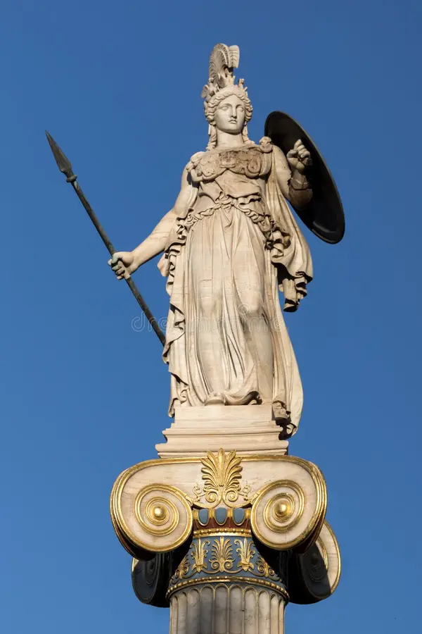
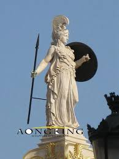

Nós do santuário servimos à Deusa Athena. Os deuses muitas vezes desprezam os humanos. Os deuses cósmicos do universo tendem a ser mesquinhos e egoístas. Eles desejam que os humanos os adorem e os sirvam por pura vaidade deles. E por seres eles desejam destruir a raça humana alegando que a falta de temor do poder dos deuses tem deixados os humanos ambiciosos demais e cheios de si. Em sua divina perspectiva a vê os humanos de forma diferente. Os seres humanos no olhar dela apesar de seus defeitos, tem uma capacidade de amar. E isso move o coração da deusa Athena a querer enfrentar o poder dos deuses para garantir que os humanos possam permanecer vivendo no planeta Terra e evoluindo até se tornarem puros como deveriam ser.